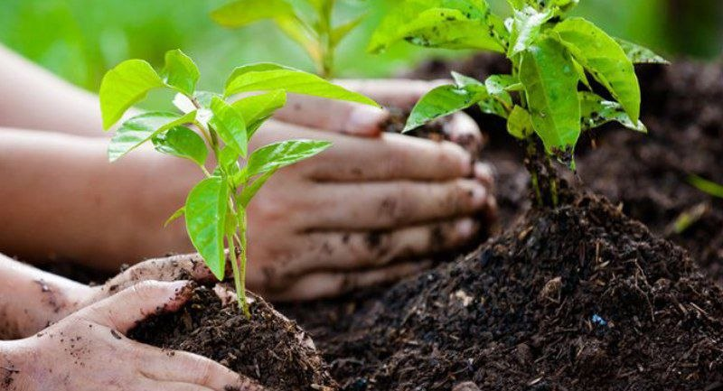

Simple ways to reduce air pollution in our community.To reduce air pollution and create cleaner cities, we can make small changes in our daily lives. People can use public transport, bicycles, or electric vehicles to reduce harmful smoke from cars. Planting more trees and keeping public places clean can also make the environment fresher and more beautiful. We can save energy by turning off unused lights and using renewable energy like solar power. Recycling waste and reducing plastic use are simple ways to help protect our planet too. If everyone works together and makes smart choices, we can create a cleaner, greener, and happier future for everyone.

Trees help clean polluted air and make the environment healthier.Planting more trees is one of the best ways to reduce air pollution and make cities cleaner and greener. Trees absorb harmful gases and release fresh oxygen into the air, helping people stay healthier. They also provide shade, reduce heat, and make the environment more beautiful and relaxing. By planting more trees in parks, schools, and cities, we can help create a fresher and happier future for everyone.

Walking and biking reduce pollution from vehicles.Walking or riding a bike is a simple way to reduce air pollution and keep the environment clean. It helps reduce smoke from vehicles and saves energy at the same time. Walking and cycling are also good for our health because they keep our bodies active and strong. By choosing to walk or ride a bike for short distances, we can help create cleaner, greener, and healthier cities for everyone.

Solar energy is clean and eco-friendly for smart cities.Using solar energy is a smart and eco-friendly way to reduce air pollution and save electricity. Solar panels use energy from the sun to produce clean power without creating harmful smoke or gases. This helps protect the environment and reduces the use of fossil fuels. By using more solar energy in homes, schools, and cities, we can create a cleaner, greener, and more sustainable future.
.jpg)
Public transport helps reduce traffic and air pollution.Using public transport is a great way to reduce air pollution and traffic in busy cities. Buses, trains, and other public vehicles can carry many people at the same time, which helps reduce the number of cars on the road. This lowers harmful smoke and saves energy. Public transport is also convenient and can help create cleaner, greener, and more organized cities for everyone.